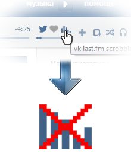

|  | Вас приветствует приложение VK last.fm scrobbler!
А у нас обновление! Теперь появилась функция отключения скробблинга простым нажатием индикатора. Функция действует до закрытия вкладки Приятного скробблинга! |
|||
| Hello! We are VK last.fm scrobbler!
We have update. Now if you want to stop scrobbling please press on the indicator. Function acts till your closing a page with playing. Have a excellent scrobbling! |
||||
|
||||